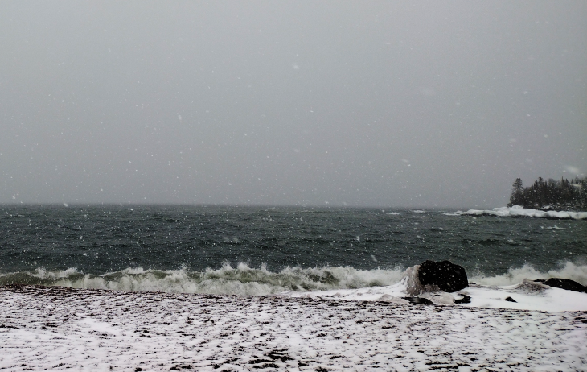

This site will
explore the mysterious allure of the Inland Sea and the Boreal Forest,
which may lie close to what some of the poets of the nineteenth
century, the Romanticists, were on about.
Correspondence
Laurence von Bottorff
P.O. Box 1302
Grand Marais, MN, 55604
USA
The week so far
This has been a typical North Coast (NC) early Spring week (March 20—26) of weather confusion. It was sunny and relatively mild, hovering around 40 over the weekend, but then Tuesday the 22nd through Wednesday the 23rd brought at least a foot of heavy, wet snow. Today, we have again a mild and sunny day, last check 49 degrees! But again, this is typical NC bait-and-switch, i.e., we can go right back to Half-Winter, my term for the typical Spring up here where we bounce between daily freezing temps up to the fifties.
I try to get down to the Harbour daily. Yesterday this was the East Bay
 East Bay, March 23, 2022so it escapes the scientific scalpels and tweezers of scholarly research. Basically, one reads…and one absorbs—perhaps many times this cycle. And then the exercise part of the process is over. No further left-brain analysis or dissection necessary. No “what does it really mean?” No “what was the context in which…” No “what were his sources of inspiration.” Let’s take a look at a poem from whom I consider one of the leading poets of the age, she being Emily Jane Brontë, specifically, her Fall leaves fall
Fall, leaves, fall; die, flowers, away;
Lengthen night and shorten day;
Every leaf speaks bliss to me
Fluttering from the autumn tree.
I shall smile when wreaths of snow
Blossom where the rose should grow;
I shall sing when night’s decay
Ushers in a drearier day.
This is your first test. You either get it or you don’t. No digging or working out its meaning necessary.
Brontë versus Hemingway
Three shelves
Sublimity
The sublime is a particularly badly mauled concept by the academes.